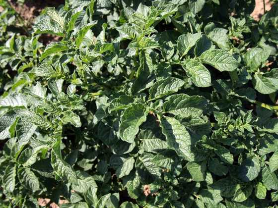
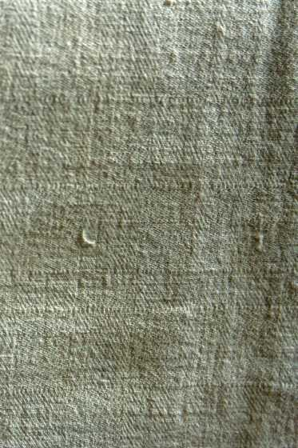
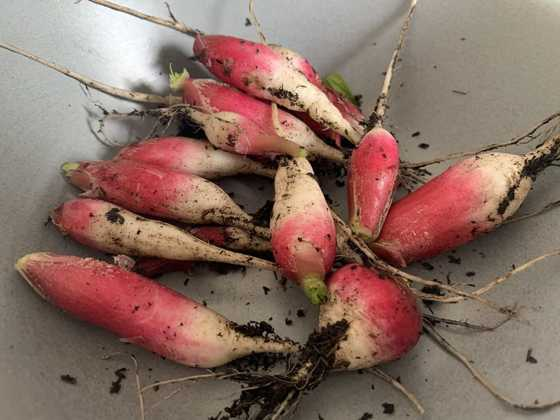
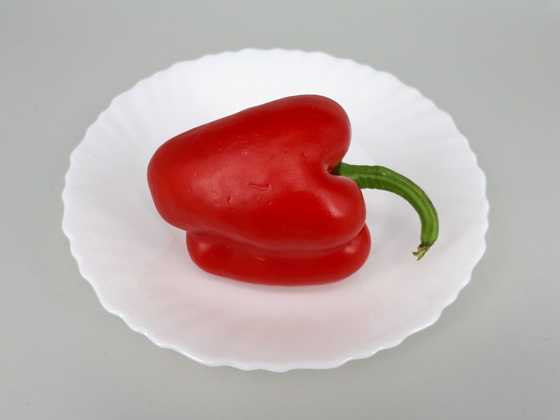
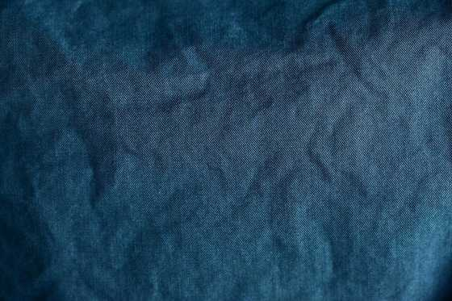
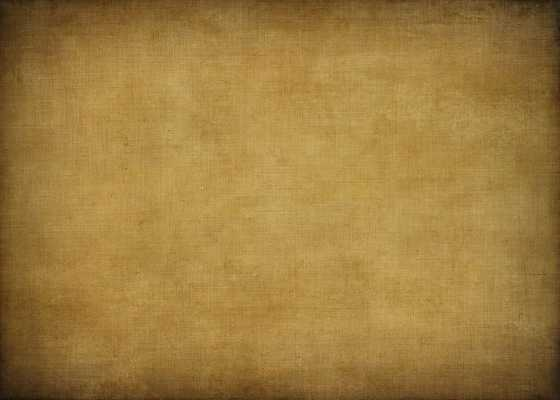
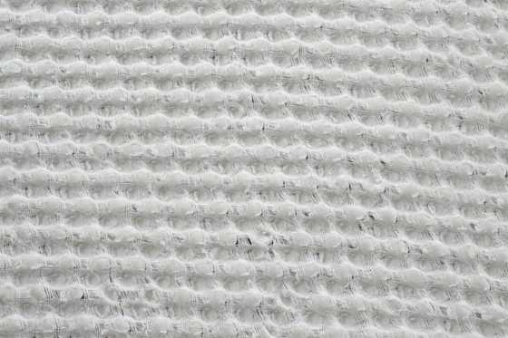
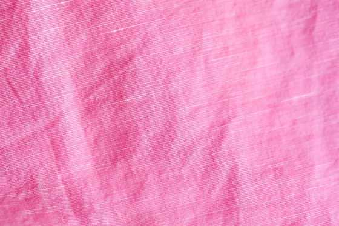

県内農家の野菜
当日仕入れの新鮮な野菜。オーガニックのものも扱うと紹介されています。

群馬県桐生市宮本町・古民家のお店
野菜も、服も、器も。つくった人の背景が、手に取る人の頭の中に浮かぶように。さくげつは、そんな売り方を大切にしているお店です。
お店の由来と想い
紹介記事によると、さくげつは2022年、田口康範さんと妻の侑希乃さんが桐生市で開いたお店です。康範さんは京都市出身で、アパレルメーカーに勤めたのち独立。桐生で出会った人々の雰囲気に惹かれ、移住と開業を決めたと紹介されています。店舗は、築約100年(記事により築120年とも)の古民家を改修したものです。
「作り手の背景が、お客様の頭の中に浮かぶような売り方を。」
日本各地の作り手と出会い、自分たちが感じた熱を伝えること。それが店づくりの軸だと語られています。扱うのは洋服と食材のセレクトで、県内の農家の野菜、調味料、パン、器、桐生で作られた衣服などが並びます。
情報源: silky people(インタビュー) / tripre(紹介記事) / Instagram
店名の意味は確認できなかったため記載していません。見出しなどの言い回しは制作側の表現です。
取り扱い
紹介記事で確認できた取り扱いの種類です。品目・価格・入荷日の詳細は準備中で、最新情報はInstagramでご確認ください。
当日仕入れの新鮮な野菜。オーガニックのものも扱うと紹介されています。

無添加を中心に、全国から選んだ調味料やハーブ・スパイスの塩などが紹介されています。

毎週金曜に天然酵母パン、月に1回焼き菓子が並ぶと紹介されています。

桐生で作られたものを中心に、着心地のよい素材で遊び心のあるデザインと紹介されています。

大分の小鹿田(おんた)焼など、素朴な味わいの器を扱うと紹介されています。
価格・商品の詳細: 準備中








口コミ
野菜を買いに寄ったら、つい洋服まで見入ってしまいました。つくった方のお話が聞けるのがうれしいです。
(創作のイメージ例)古い家の雰囲気がやさしくて、ゆっくり選べました。贈り物の調味料もここで揃えました。
(創作のイメージ例)金曜のパンを目当てに通っています。季節の野菜の食べ方も教えてもらえて助かります。
(創作のイメージ例)上記は制作側が創作したイメージ例であり、実在のお客さまの声ではありません。
アクセス・ご案内
| 所在地 | 群馬県桐生市宮本町１丁目５−６ |
|---|---|
| 電話 | 準備中 |
| 営業時間 | 火〜土曜 13:00〜18:00、日・月曜定休と紹介されています(変更の可能性あり。最新情報はInstagramで) |
| SNS | Instagram @sakugetsu_kiryu |